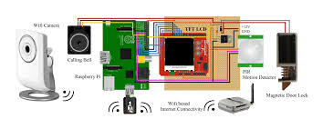

A mini Database Management System project for Pharmacy Database Managemnt System with PHP as the front end tool and MYSQL
as back end tool.
The Pharmacy Management System here demonstrates the usage mainly for administrators in the project.
A Mini Computer Graphics and Visualization Project on "Snake and ladder" which is developed using OpenGL in C Language
which demonstrates the various concepts,ideas and logic for developing
this project.
The project idea was to implement the snake and ladder game using computer graphics.
The project has been implemented by efficiently using the GLUT library and C user interface to obtain the optimized result.

Most doors are controlled by persons with the use of keys, security cards, password or
pattern to open the door.
The aim is to help users for improvement of the door security of
sensitive locations by using face detection and recognition.
The Objective of this project is to provide a safe and secure way of door locking system,which can be accessed remotely.
where an user can view,who is accessing the door through his email and also provide instructions through it.
I worked as an intern in this company for a duration of 1 month,where
I was made to work on their
current Project based on IOT
that is "3D Printer".
“The integration of 3D Printing into cloud manufacturing to promote the development of future smart networks of
virtual 3D Printing"
was the main goal.
The primary objective of the internship was to get a strong hold on the implementation of the IOT related
projects.
To develop skills in effective assessment of risk.And understanding New Product Development process flow and also
to develop skills
in crisis intervention and response.